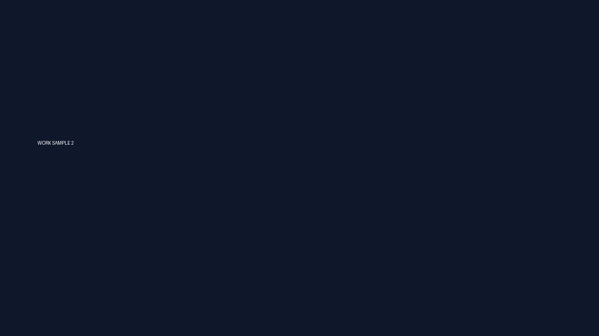

Frontend / Web Engineer
HTML / CSS / JavaScript / WordPress を中心に、
レスポンシブ実装・UI再現・運用保守まで対応。
2021年よりフリーランスWebエンジニアとして活動。
医療機関サイト・企業サイトを中心に、フロントエンド実装、WordPress構築、運用保守を行っています。
デザインカンプを忠実に再現する実装を得意としており、
PC・TB・SPのレスポンシブ設計やUI調整まで細かく対応可能です。
インプラント・矯正・ホワイトニングなど複数ページを実装。
レスポンシブ対応、UI調整、WordPress組み込みまで担当。

既存サイトの運用改善、UI修正、表示崩れ対応などを実施。
クライアントとのコミュニケーションを含め柔軟に対応。
Figma / XDをもとに、余白・タイポグラフィ・レスポンシブ挙動まで高精度に実装。
歯科医院を中心とした医療系ページの制作経験多数。
クライアント・ディレクターとの進行管理、修正対応まで柔軟に対応可能。
Mail：yourmail@example.com
GitHub：https://github.com/
Portfolio：https://example.com